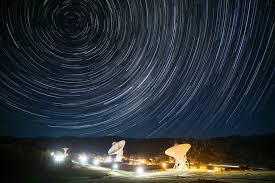
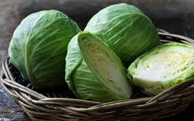

Menú
CIENCIAS
MEDIO AMBIENTE
ANIMALES
HISTORIA

Este asteroide podría chocar contra la Tierra, pero los científicos tienen un plan
Las agencias espaciales disponen de sistemas para detectar, seguir y predecir las futuras órbitas de asteroides potencialmente peligrosos.
Cómo ver la rara alineación de planetas que iluminará el cielo nocturno en febrero de 2025
Aunque los planetas siempre están "alineados", ver más de cuatro en el cielo es poco frecuente. La alineación de febrero ofrece la oportunidad de contemplar los siete en una vista panorámica.
Agujeros negros: las 3 definiciones que suelen confundirse con estos gigantes del espacio
La gravedad de estos objetos astronómicos es tan alta que atrae estrellas, planetas e incluso la luz. Aunque se ha investigado mucho sobre ellos, todavía queda mucho por conocer y a menudo se los confunde con otros conceptos.

Los 4 beneficios de la col para la salud humana, según la ciencia
Rica en nutrientes, la col es importante en la alimentación y puede consumirse a diario. Descubre por qué es buena, según los expertos consultados por Mens Luminosa.